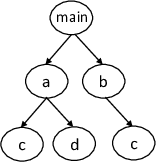
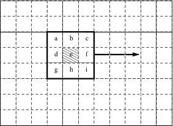
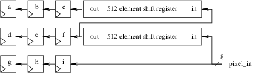
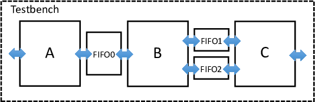
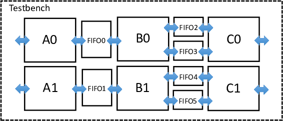

2. Optimization Guide¶
This chapter describes how to optimize the generated hardware through software code changes and SmartHLS pragmas/constraints.
2.1. Loop Pipelining¶
Loop pipelining is a performance optimization in high-level synthesis (HLS), which extracts loop-level parallelism by executing multiple loop iterations concurrently using the same hardware. The key performance metric when loop pipelining is the time interval between starting successive loop iterations, called the initiation interval (II). Ideally, the initiation interval should be one, meaning that we can start a new loop iteration every clock cycle. This is the highest throughput that a pipelined loop can achieve without unrolling. Although SmartHLS will always try to achieve an II of 1, sometimes this is not possible, due to resource constraints, or due to cross-iteration dependencies (recurrences) in a loop.
Consider the following example:
int sum = 0;
for (i = 0; i < N; i++) {
#pragma HLS loop pipeline
for (j = 0; j < N; j++) {
sum += A[i][j] * B[i][j];
}
}
This example shows a nested loop, which performs an element-wise multiplication of two 2-dimensional arrays and accumulates the sum. The inner loop is specified with the Pipeline Loop pragma. SmartHLS will show message as below when compiling this code:
Info: Pipelining the loop on line 61 of loop.c with label "loop".
Info: Done pipelining the loop on line 61 of loop.c with label "loop".
Pipeline Initiation Interval (II) = 1.
These info messages let us know that SmartHLS successfully pipelined the inner loop with an II of 1. Even though an II of 1 has been achieved, the hardware may not meet our desired performance requirements. In this case, we can choose to pipeline the outer loop by moving the pragma to the outer loop:
int sum = 0;
#pragma HLS loop pipeline
for (i = 0; i < N; i++) {
for (j = 0; j < N; j++) {
sum += A[i][j] * B[i][j];
}
}
When an outer loop is specified to be pipelined, SmartHLS will automatically unroll all of the inner loops.
This can provide higher performance at the expense of higher circuit area.
In this example, N is 25, and when the inner loop is unrolled, SmartHLS will create 25 multipliers and adder units working in parallel.
However, this does not mean that the performance will be improved by 25x due to the resource constraints on memories A and B.
When SmartHLS runs, we will see the following messages:
Info: Unrolling the entire loop nest on line 61 of loop.c.
This loop nest is inside a parent loop labelled 'loop', which is specified to be
pipelined.
Info: Pipelining the loop on line 60 of loop.c with label "loop".
Info: Resource constraint limits initiation interval to 13
Resource 'A_local_memory_port' has 25 uses per cycle but only 2 ports available.
+--------------------------------+-------------------+-----------+
| Operation | Location | # of Uses |
+--------------------------------+-------------------+-----------+
| 'load' operation for array 'A' | line 60 of loop.c | 25 |
+--------------------------------+-------------------+-----------+
| | Total # of Uses | 25 |
+--------------------------------+-------------------+-----------+
Info: Resource constraint limits initiation interval to 13
Resource 'B_local_memory_port' has 25 uses per cycle but only 2 ports available.
+--------------------------------+-------------------+-----------+
| Operation | Location | # of Uses |
+--------------------------------+-------------------+-----------+
| 'load' operation for array 'B' | line 60 of loop.c | 25 |
+--------------------------------+-------------------+-----------+
| | Total # of Uses | 25 |
+--------------------------------+-------------------+-----------+
Info: Done pipelining the loop on line 60 of loop.c with label "loop".
Pipeline Initiation Interval (II) = 13.
The first info message indicates that the inner loop is being unrolled, since the outer loop is specified to be pipelined.
Next, the info messages tell us there are 25 load operations that need to occur to both memory A and B every clock cycle if II is 1, but there are only two ports (which allows 2 loads per cycle) available for each memory.
Local_memory_port indicates that this resource is a memory port of a local memory, which is described in Hardware Architecture.
Due to the limited available memory ports, SmartHLS must increase the loop pipeline II until we can meet the constraint of having 25 load operations to each memory.
When the II is 13, meaning that each successive loop iteration is started every 13 cycles, we have enough time to allow 26 load operations, hence the constraint is met
(each memory has 2 ports by default, which allows 2 memory accesses per cycle. In 13 cycles, we can perform 26 memory accesses in total).
For this particular example, when the outer loop is pipelined, the performance is about 2x higher than when the inner loop is pipelined. However, the area has also increased by about 25x, due to having 25 multipliers and adders. Therefore, we must use care when pipelining outer loops due to the unrolling of its inner loops. In general, we recommend pipelining the innermost loop first, and if the performance requirement is not met, then try pipelining the outer loops.
Note
If the loop specified to be pipelined contains any function calls (in the loop or in any of the inner loops), the function calls will be inlined into the loop. Any descendants of the called functions will also be inlined, and all of their loops will also be unrolled automatically. If there are many descendant functions and loops, this can increase the area significantly (also described in Function Pipelining). We recommend the user to examine the program for such cases before pipelining a loop.
Lets look at an image filtering example:
for (y = 1; y < HEIGHT-1; y++) {
#pragma HLS loop pipeline
for (x = 1; x < WIDTH-1; x++) {
out[y][x] = in[y-1][x-1]*k[0][0] + in[y-1][x]*k[0][1] + in[y-1][x+1]*k[0][2]
+ in[y ][x-1]*k[1][0] + in[y ][x]*k[1][1] + in[y ][x+1]*k[1][2]
+ in[y+1][x-1]*k[2][0] + in[y+1][x]*k[2][1] + in[y+1][x+1]*k[2][2];
}
}
This example applies a 3 x 3 image kernel filter, array k, to an input image, array in, producing an output image, array out.
When we turn on loop pipelining and run SmartHLS, we can see the following messages:
Info: Pipelining the loop on line 22 of kernel.c with label "loop".
Info: Assigning new label to the loop on line 22 of kernel.c with label "loop"
Info: Resource constraint limits initiation interval to 5.
Resource 'in_local_memory_port' has 9 uses per cycle but only 2 units available.
+---------------------------------+---------------------+-----------+
| Operation | Location | # of Uses |
+---------------------------------+---------------------+-----------+
| 'load' operation for array 'in' | line 23 of kernel.c | 9 |
+---------------------------------+---------------------+-----------+
| | Total # of Uses | 9 |
+---------------------------------+---------------------+-----------+
Info: Done pipelining the loop on line 22 of kernel.c with label "loop".
Pipeline Initiation Interval (II) = 5.
The pipeline initiation interval is limited by the memory accesses to the input image (array in). There are 9 loads but only two memory ports, which forces the loop II to be 5, allowing up to 10 loads per iteration from array in.
For loops where the II is constrained by memory accesses to an array, you can improve the II by manually splitting the array into several smaller C arrays.
Each array can be accessed independently, which reduces resource contention.
In this case, we can split the image into rows of pixels, where each row is stored in a separate array (in_0, in_1, and in_2).
for (y = 1; y < HEIGHT-1; y++) {
#pragma HLS loop pipeline
for (x = 1; x < WIDTH-1; x++) {
out[y][x] = in_0[x-1]*k[0][0] + in_0[x]*k[0][1] + in_0[x+1]*k[0][2]
+ in_1[x-1]*k[1][0] + in_1[x]*k[1][1] + in_1[x+1]*k[1][2]
+ in_2[x-1]*k[2][0] + in_2[x]*k[2][1] + in_2[x+1]*k[2][2];
}
}
Now when we run SmartHLS we will see:
Info: Pipelining the loop on line 22 of kernel.c with label "loop".
Info: Resource constraint limits initiation interval to 2.
Resource 'in_0_local_memory_port' has 3 uses per cycle but only 2 units available.
+-----------------------------------+---------------------+-----------+
| Operation | Location | # of Uses |
+-----------------------------------+---------------------+-----------+
| 'load' operation for array 'in_0' | line 33 of kernel.c | 3 |
+-----------------------------------+---------------------+-----------+
| | Total # of Uses | 3 |
+-----------------------------------+---------------------+-----------+
Info: Resource constraint limits initiation interval to 2.
Resource 'in_1_local_memory_port' has 3 uses per cycle but only 2 units available.
+-----------------------------------+---------------------+-----------+
| Operation | Location | # of Uses |
+-----------------------------------+---------------------+-----------+
| 'load' operation for array 'in_1' | line 33 of kernel.c | 3 |
+-----------------------------------+---------------------+-----------+
| | Total # of Uses | 3 |
+-----------------------------------+---------------------+-----------+
Info: Resource constraint limits initiation interval to 2.
Resource 'in_2_local_memory_port' has 3 uses per cycle but only 2 units available.
+-----------------------------------+---------------------+-----------+
| Operation | Location | # of Uses |
+-----------------------------------+---------------------+-----------+
| 'load' operation for array 'in_2' | line 33 of kernel.c | 3 |
+-----------------------------------+---------------------+-----------+
| | Total # of Uses | 3 |
+-----------------------------------+---------------------+-----------+
Info: Done pipelining the loop on line 22 of kernel.c with label "loop".
Pipeline Initiation Interval (II) = 2.
Now the initiation interval has improved from 5 to 2, which is a more than a 2x performance improvement just by manually partitioning the arrays.
Consider another example below:
int A = 1;
#pragma HLS loop pipeline
for (i = 0; i < N; i++) {
A = A * B[i];
}
We have a loop where the value of A in the current iteration is dependent on the previous iteration. This is called a cross-iteration dependency or loop recurrence.
In order to achieve an II of 1, the value of A is required every clock cycle.
This means that the multiplication of A and B[i] has to complete every clock cycle.
Now, let’s consider a case where we would like to pipeline the multiplier more in order to get a higher Fmax (the maximum frequency of the circuit).
This can be done by changing the multiplier latency to 2 (using the set_operation_latency constraint in SmartHLS) from the default latency of 1.
When SmartHLS runs, we will see the following messages:
Info: Pipelining the loop on line 10 of loop_recurrence.c with label "loop".
Info: Cross-iteration dependency does not allow initiation interval of 1.
Dependency (distance = 1) from 'mul' operation (at line 11 of loop_recurrence.c) to
'phi' operation (at line 11 of loop_recurrence.c)
Recurrence path:
+-----------------+------------------------------+---------------+
| Operation | Location | Cycle Latency |
+-----------------+------------------------------+---------------+
| 'phi' operation | line 11 of loop_recurrence.c | 0 |
| 'mul' operation | line 11 of loop_recurrence.c | 2 |
+-----------------+------------------------------+---------------+
| | Total Required Latency | 2 |
+-----------------+------------------------------+---------------+
Total required latency = 2. Maximum allowed latency = distance x II = 1 x 1 = 1.
Total required latency > Maximum allowed latency, we must increase II
Info: Done pipelining the loop on line 10 of loop_recurrence.c with label "loop".
Pipeline Initiation Interval (II) = 2.
The messages tell us that the II cannot be 1 due to a cross-iteration dependency, which is from the multiply operation of the current loop iteration to the phi operation of the next iteration.
You can think of a phi as a select operation, which is need to represent the program’s intermediate representation in static single assignment form.
In this particular case, the phi selects the value of A between the initial value of 1 (in the first iteration of the loop),
and the computed value of A from within the loop (in the iterations after the first).
The dependency distance of 1 means that the multiply value is used by the phi operation 1 loop iteration later. Or alternatively, the phi operation is dependent on the multiply value from one loop iteration ago.
The Recurrence path table shows that the phi operation takes 0 cycles, but the multiply operation takes 2 cycles, hence the total required latency is 2 for the path.
However, the maximum allowed latency, if the II were to be 1, is 1 (distance x II = 1 x 1 = 1).
In this case, the next loop iteration should be starting after 1 clock cycle (II = 1) but we still have not finished calculating the result of the multiply which is needed by the phi operation in the next iteration.
Since the total required latency is greater than the maximum allowed latency, the II has to be increased to 2.
With the II being 2, the maximum allowed latency becomes 2, which satisfies the total required latency.
In this case, the first iteration will start, we will wait two clock cycles for the multiply to finish (II = 2), then start the next loop iteration.
In general, for pipelining, achieving a lower II is the highest priority for achieving the highest performance, even at the expense of slightly lower Fmax. For example, if we can reduce the II from 2 to 1 then we cut the clock cycles taken by the loop in half, but we are unlikely to double the Fmax by inserting one more pipeline stage (which changes an II of 1 to 2 in this case).
If we use the set_operation_latency constraint to reduce the multiplier latency from 2 to 1 and run SmartHLS, we will see the following messages, where we have achieved an II of 1:
Info: Pipelining the loop on line 10 of loop_recurrence.c with label "loop".
Info: Done pipelining the loop on line 10 of loop_recurrence.c with label "loop".
Pipeline Initiation Interval (II) = 1.
The above example illustrated a case of II being increased due to the latency of operations in the presence of a loop recurrence. The II can also be increased due to the delay of operations in a loop with cross-iteration dependencies.
Consider the following example:
#pragma HLS loop pipeline
for (iter = 0; iter < MAX_ITER; iter++) {
long long squared = x * x + y * y;
xtmp = x * x - y * y + x_0;
y = 2 * x * y + y_0;
x = xtmp;
filter += squared <= 4;
}
The code shows the main computations for the mandelbrot set, the algorithm details are not important. When we run SmartHLS on this code, we see the following messages:
Info: Pipelining the loop on line 39 of mandelbrot.c with label "loop".
Info: Cross-iteration dependency does not allow initiation interval (II) of 1.
Dependency (distance = 1) from 'trunc' operation (at line 42 of mandelbrot.c) to
'phi' operation (at line 42 of mandelbrot.c)
Recurrence path:
+-------------------+-------------------------+------------+
| Operation | Location | Delay [ns] |
+-------------------+-------------------------+------------+
| 'phi' operation | line 42 of mandelbrot.c | 0.00 |
| 'sext' operation | line 40 of mandelbrot.c | 0.00 |
| 'mul' operation | line 42 of mandelbrot.c | 8.00 |
| 'ashr' operation | line 42 of mandelbrot.c | 0.00 |
| 'shl' operation | line 42 of mandelbrot.c | 0.00 |
| 'add' operation | line 42 of mandelbrot.c | 6.40 |
| 'trunc' operation | line 42 of mandelbrot.c | 0.00 |
+-------------------+-------------------------+------------+
| | Total Required Delay | 14.40 |
+-------------------+-------------------------+------------+
Total required delay = 14.40 ns.
Maximum allowed latency = distance x II = 1.
Maximum allowed delay = Maximum allowed latency x clock period
= 1 x 8.00 ns = 8.00 ns
Total required delay > Maximum allowed delay, we must increase II.
Tip: Increase the clock period to be greater than the total required delay
to improve II.
Info: Done pipelining the loop on line 39 of mandelbrot.c with label "loop".
Pipeline Initiation Interval (II) = 2.
The messages indicate that there is a cross-iteration dependency from the truncate operation to the phi operation, where the total required delay for the operation is 14.40 ns. On the other hand, the maximum allowed latency, if the II were to be 1, is 1, and the maximum allowed delay, based on the given clock period constraint (8 ns) and the maximum allowed latency (1), is 8 ns. Since the required delay of 14.4 ns for the path is greater than the maximum allowed delay of 8 ns, SmartHLS must increase the II to 2 to satisfy the required delay. If the II is 2, the maximum allowed latency (distance x II = 1 x 2) becomes 2, hence the maximum allowed delay becomes 16 ns (maximum allowed latency x clock period = 2 x 8 ns), and the required delay can be met.
As mentioned above, keeping the II low (and ideally 1) should generally be the priority for achieving the maximum performance.
Another way to meet the required delay shown above, based on the equations shown as well as the described Tip, is to increase the clock period rather than increasing the II.
With an II of 1 (hence the maximum allowed latency of 1), if the clock period is bigger than 14.4, the maximum allowed delay should be greater than the total required delay.
Let’s set the clock period to 15 (with the CLOCK_PERIOD constraint), and re-run SmartHLS:
Info: Generating pipeline for loop on line 39 of mandelbrot.c with label "loop".
Pipeline initiation interval = 1.
You can see that SmartHLS was now able to generate a circuit with an II of 1.
Loop pipelining is a great technique for achieving high performance, and in order to achieve the maximum performance, users should be mindful of the circuit resource constraints and the recurrences that exist in the loop.
2.2. Loop Unrolling¶
SmartHLS allows the user to specify a loop to be unrolled through the use of a pragma, #pragma HLS loop unroll (see Unroll Loop).
#pragma HLS loop unroll
for (i = 0; i < N; i++) {
...
}
This unrolls the loop completely. Unrolling a loop can improve performance as the hardware units for the loop body are replicated, but it also increases area. You may also specify a loop to be partially unrolled, to prevent the area from increasing too much.
#pragma HLS loop unroll factor(2)
for (i = 0; i < N; i++) {
...
}
This unrolls the loop two times (i.e., the number of loop iteration is halved and the loop body is doubled). You may also prevent a loop from being unrolled. SmartHLS automatically unrolls small loops, but you may not want the loop to be unrolled due to area constraints or to pipeline the loop. If the loop is completely unrolled, the loop disappears, hence you cannot pipeline the loop.
#pragma HLS loop unroll factor(1)
for (i = 0; i < N; i++) {
...
}
This prevents the loop from being unrolled.
2.3. Function Pipelining¶
Similar to loop pipelining, when a function is specified to be pipelined, SmartHLS will automatically inline all of its descendant functions, and unroll all loops (in the specified function as well as in all of its descendant functions). This is done to create a high-performance pipelined hardware. Consider the following call graph:
{kind=link}
where function c contains a loop.
If function a is specified as the top-level function and to be function pipelined, functions c and d, which are descendant functions of a will be automatically inlined (c will not be inlined into b).
When SmartHLS runs, it will print out the following:
Info: Adding no_inline attribute to the user-specified function: a
Info: Inlining function 'c' into its parent function 'a' for pipelining.
Info: Inlining function 'd' into its parent function 'a' for pipelining.
Info: Unrolling the entire loop nest on line 22 of function_pipeline.c.
This loop nest is inside function 'a', which is specified to be pipelined.
Info: Pipelining function 'a' on line 15 of function_pipeline.c.
It shows that SmartHLS first adds the no_inline attribute to function a to prevent it from being inlined. Then it inlines its descendant functions and unrolls their loops.
Care must be taken though, if the function designated to be pipelined has many descendant functions, which also has many loops, the hardware area can increase significantly (as was described above for Loop Pipelining).
For instance, in the call graph shown above, if main is specified to be pipelined, functions a, b, c, and d will be automatically inlined.
There will be two copies of c, as the function is called from two different places.
As there is also a loop in c that will be completely unrolled (in each copy of c), this can increase the area significantly.
Hence for function pipelining, one should examine the program before pipelining a function that has many descendant functions or loops.
2.4. Memory Partitioning¶
Memory Partitioning is an optimization where aggregate types such as arrays and structs are partitioned into smaller pieces allowing for a greater number of reads and writes (accesses) per cycle. SmartHLS instantiates a RAM for each aggregate type where each RAM has up to two ports (allowing up to two reads/writes per cycle). Partitioning aggregate types into smaller memories or into its individual elements allows for more memory accesses per cycle and improves memory bandwidth.
More information about memory partitioning is described in Memory Partitioning.
Memory partitioning can be used to gain performance when there are pipelines with high II due to memory contention.
int data[MAX_ITER];
...
#pragma HLS loop pipeline
for (iter = 0; iter < (MAX_ITER-3); iter++) {
long long x0 = data[iter];
long long x1 = data[iter+1];
long long y0 = data[iter+2];
long long y1 = data[iter+3];
result += x0 * x1 + y0 * y1;
}
In the pipelined code above, there are four accesses to the array data per cycle but only two ports are available for the memory.
All four accesses of one iteration must finish before the next loop iteration can start. With two accesses possible
per cycle and four accesses required per iteration, the II for the pipeline will be 2. For more information on pipelines and II, please refer
to the Loop Pipelining section.
To help improve the memory bandwidth, SmartHLS automatically analyzes the access patterns of each memory
and attempts to split the memory into separate partitions if possible. In the above example, automatic access-based
partitioning will not be able to partition the data array as the four accesses in the loop overlap and span the
entire memory. In this case, user-specified partitioning would be ideal to partition memories and eliminate memory
contention, allowing the pipeline to achieve an II of 1.
#pragma HLS memory partition variable(data)
int data[MAX_ITER];
...
#pragma HLS loop pipeline
for (iter = 0; iter < (MAX_ITER-3); iter++) {
long long x0 = data[iter];
long long x1 = data[iter+1];
long long y0 = data[iter+2];
long long y1 = data[iter+3];
result += x0 * x1 + y0 * y1;
}
In the above snippet, the array data is specified to be completely partitioned. By default,
the partition dimension is set to 0. This means the memory will be partitioned into individual elements
along the right-most dimension. The partition dimension can be changed with the optional dim parameter (see Partition Memory).
SmartHLS will analyze the ranges of each accessing instruction to the array and create partitions only for the accessed elements.
Unaccessed partitions are discarded.
For user-specified partitioning, the accesses will be modified to be access the correct partition based
on the index at runtime.
When applied to memories with high memory contention in deep pipelines, memory partition has the potential to greatly impact circuit performance by reducing pipeline II.
2.4.1. Advanced Memory Partitioning¶
Memory partitioning can also be used to partition structs.
struct point {
char x, y;
};
struct point zero[2][3][4];
#pragma HLS loop unroll factor(1)
for (unsigned i = 0; i < 2; i++)
#pragma HLS loop unroll factor(1)
for (unsigned j = 0; j < 3; j++)
#pragma HLS loop unroll factor(1)
for (unsigned k = 0; k < 4; k++)
zero[i][j][k].x = zero[i][j][k].y;
The code above shows a 3-level nested loop, where only the middle loop is fully unrolled.
After the middle loop is unrolled, it creates three different memory accesses to non-overlapping regions of the
array zero. This means the array can be automatically partitioned across the array dimension 1.
Because the x and y fields are accessed separately, each element of struct point can be
further partitioned into two partitions. Therefore, SmartHLS will partition the array zero into 6
partitions, one for each non-overlapping access range into the array of structs. This results in the
equivalent code below.
struct point {
char x, y;
};
struct point zero_a0_a0_a0_x[2][4];
struct point zero_a0_a0_a0_y[2][4];
struct point zero_a0_a1_a0_x[2][4];
struct point zero_a0_a1_a0_y[2][4];
struct point zero_a0_a2_a0_x[2][4];
struct point zero_a0_a2_a0_7[2][4];
#pragma HLS loop unroll factor(1)
#pragma HLS loop pipeline
for (unsigned i = 0; i < 2; i++)
#pragma HLS loop unroll factor(1)
for (unsigned k = 0; k < 4; k++)
zero_a0_a0_a0_x[i][k] = zero_a0_a0_a0_y[i][k];
#pragma HLS loop unroll factor(1)
for (unsigned k = 0; k < 4; k++)
zero_a0_a1_a0_x[i][k] = zero_a0_a1_a0_y[i][k];
#pragma HLS loop unroll factor(1)
for (unsigned k = 0; k < 4; k++)
zero_a0_a2_a0_x[i][k] = zero_a0_a2_a0_y[i][k];
For structs or arrays of structs that are specified to be partitioned with user-specified partitioning, the partition dimension must be specified to be 0 or the struct will not be partitioned into its elements. User-specified partitioning only partitions up to the array dimension specified, therefore, if higher dimensions are specified the element type of the array will not be struct type and SmartHLS will not partition the lower dimensions. When dimension 0 is specified for an array, the element type will be struct type and SmartHLS will partition the array completely and then automatically partition the struct elements. When partitioning structs or array elements that are structs, user-specified partitioning will also automatically partition any nested aggregate types.
struct point {
char x, y;
int a[10];
};
// "zero" will be partitioned into its elements
// with array "a" also being partitioned into its elements
#pragma HLS memory partition variable(zero) dim(0)
// can also not specify dim(0) as it is 0 by default
struct point zero;
// "one" will be partitioned into 4 structs
// and each struct will be partitioned into its elements
// with array "a" also being partitioned into its elements
#pragma HLS memory partition variable(zero) dim(0)
struct point one[4];
// "two" will be partitioned into 8 structs
// and each struct will be partitioned into its elements
// with array "a" also being partitioned into its elements
#pragma HLS memory partition variable(zero) dim(0)
struct point two[2][4];
// "three" will be partitioned into 2 struct point[4] arrays
// the struct and its elements will not be partitioned
#pragma HLS memory partition variable(zero) dim(1)
struct point three[2][4];
When memory partitioning fails to partition a struct, it will print the following warning.
Warning: The struct, "struct1", on line 168 of struct.c can result in inefficient
memory accesses. We recommend splitting it up into individual elements.
For any aggregate types that holds FIFOs, SmartHLS will automatically apply user-specified partitioning to try to fully partition the memory and make sure the FIFOs become individual variables. In the case that memory partitioning fails to do so, SmartHLS will error out as SmartHLS cannot handle unpartitioned FIFOs.
Info: Found memory with FIFO(s): "array_of_FIFOs" on line 10 of fifos.c. Forcing
partition type to be complete.
Error: The FIFO(s) in memory "array_of_FIFOs" on line 10 of fifos.c was unable to
be split into individual FIFOs by SmartHLS which will result in functional errors.
To better partition the FIFO memory please try moving the FIFOs into a simpler
data structures or manually partitioning the FIFOs into individual variables.
2.4.2. Limitations and Workarounds¶
Access-based partitioning will not create new accessing instructions and therefore can only modify existing ones. This limits partitions to be the same shape as the range of accesses, with overlapping ranges merged into the same partition. A side-effect of this is that if there are multiple overlapping ranges, the partition may become large and reduce performance gain.
int array[8];
int result = 0;
...
#pragma HLS loop unroll factor(1)
for (i = 0; i < 5; i++) {
result += array[i]
}
#pragma HLS loop unroll factor(1)
for (i = 4; i < 8; i++) {
result += array[i]
}
In the above snippet there are two accesses to an array in two loops. The range of accesses of the first loop is from element 0 to 4 of the array, the range of accesses of the second loop is from element 4 to 7 of the array. In this case the two accesses have element 4 overlapping. They will be merged and the generated partition will cover the entire array which results in the memory being left unpartitioned.
int array[8];
int result = 0;
...
#pragma HLS loop unroll factor(1)
for (i = 0; i < 4; i++) {
result += array[i]
}
result += array[4];
result += array[4];
#pragma HLS loop unroll factor(1)
for (i = 5; i < 8; i++) {
result += array[i]
}
To work around this, try unrolling the loops with pragmas or manually unrolling overlapping accesses, as shown in the code snippet above. This is done to create more non-overlapping access ranges and therefore more partitions. In the above code snippet, the loops are manually unrolled so that each access has a range that does not overlap with any other access. This allows access-based partitioning to partition the array into three partitions, one for each non-overlapping access.
Indexing arrays outside of any array dimension, even when the resulting address is inside of the memory, is not supported by memory partitioning and may cause incorrect circuit behavior. An example of this is casting a 2-d array to a pointer or only using the lowest dimension index to iterate through the entire 2-d array.
#pragma HLS memory partition variable(array)
int array[8][8];
int result = 0;
...
int *p = array;
#pragma HLS loop unroll factor(1)
// unsupported loop 1
for (i = 0; i < 64; i++) {
result += *(p+i);
}
#pragma HLS loop unroll factor(1)
// unsupported loop 2
for (i = 0; i < 64; i++) {
result += array[0][i];
}
In the code snippet above, both styles of access to the array go past the end of the right-most dimension bound by incrementing the index from 0 to the size of the array. A supported access pattern would to be to access the array as a 2-d array in a nested for loop, with the index to each dimension never going outside of the dimension bound.
int array[2][2] = {{0, 1}, {2, 3}};
In the same way, initializers, memcpy calls and other memory intrinsic calls are unsupported as they cast the pointer given to a byte pointer and accesses the number of bytes specified in a loop. In the access-based partitioning case, memory intrinsic calls will be detected and partitioning of the affected memories will be disabled. With user-specified partitioning, the memory intrinsic call will be handled to allow correct analysis of the out of bounds accesses. To avoid this in the access-based partitioning case, you can manually initialize memories in a nested for loop to ensure correct analysis.
In general, avoid aliasing memories if you want to use memory partitioning on a memory.
Avoid comparisons and other non-arithmetic operators on pointers as they are not supported by memory partitioning and will prevent partitioning.
2.5. Force Register¶
The SmartHLS Scheduler will attempt to find the best approach to schedule the circuit based on the information it has at that time. Usually, this is enough to generate a hardware with good performance. However, sometimes users may want to have explicit control about certain location to insert the register. SmartHLS does provide the flexibility to force a register at specific location.
To do so, you need to include the header file:
#include "hls/utils.hpp"
and call the function hls_reg for the data you want to register as below:
val_reg = hls_reg(val);
This will force SmartHLS to register the value, val, and any operations that depend on val will be scheduled accordingly, taking into the account the 1-cycle latency required to register the value.
.. comment
In software, a group of related data is usually decribed as a struct. And all structs will be automatically splitted up into individual elements by default in SmartHLS.
But sometime, it’s beneficial to keep the struct as a whole to ensure the alignment of operations between elements or to reduce the overhead of control logic. If this is the case, users can take advantage of the datapack feature to pack the struct into a single integer by concatenating elements together.
To utilize the datapack feature, you need to include the header file:
#include “hls/data_pack.hpp”
The implicit conversion functions between the original struct type and the packed type are provided. So you can perform the pack and unpack operations implicitly by using the
operator=.
- struct ABC {
int a; char b; short c;
};
hls::DataPack<ABC> packed_data;
struct ABC unpacked_data = packed_data; unpacked_data.a = 1; unpacked_data.b = 2;
packed_data = unpacked_data;
There are several limitations for the datapack feature support:
Only primitive types can be used inside the struct that are datapacked. Arbitrary bit-width data types are not allowed.
SW/HW Co-Simulation is not supported for SmartHLS project that uses datapack for top-level arguments.
We will improve and stablize this feature in the later releases. Please contact smarthls@microchip.com if you require more details about this feature.
2.6. Inferring a Shift Register¶
A shift register is an efficient hardware unit that is composed of a chain of registers that are connected from one to the next. It allows data to be continuously shifted from one register to its adjacent register. It is useful in applications where data is continuously coming in in a streaming fashion, where some amount of data has to be kept around for processing. A shift register is different from a memory, in that all elements stored in a shift register can be accessed at the same time.
For example, in a FIR filter, time-shifted versions of the input data, commonly referred to as taps, are needed to compute the output. A FIR filter can be expressed with the following equation:
y[n] = b0*x[n] + b1*x[n-1] + .. + bN*x[n-N]
where y[n] is the output, x[n] is the input, N indicates the filter order, and b0 to bN are filter coefficients. As you can see in the equation, once an input is received, it is needed for N+1 computations of the output. This is the perfect application for a shift register.
Let’s see how one can infer a shift register from software using SmartHLS.
int FIRFilter(int input) {
static int shift_register[TAPS] = {0};
#pragma HLS loop unroll
for (j = (TAPS - 1); j >= 1; j -= 1) {
shift_register[j] = shift_register[j - 1];
}
shift_register[0] = input;
...
return out;
}
We show the part of the FIRFilter function which pertains to the shift register (x[n] in the equation above).
Each time the FIRFilter function is called, it receives one input and produces one output.
First, the shift_register array is declared as static.
This is needed since the data stored in the shift register (time shifted versions of the input data) needs to be kept around on the
next invocation of the function.
The loop shows each element of the array being stored to an array index of 1 greater than its current index,
starting from the highest array index (TAPS - 1) all the way down to 1.
This is effectively moving each element of the array up by one array index. Then the newest input is stored in the lowest array index (0).
It is important to note the unroll pragma, which allows the loop to be unrolled. Unrolling the loop splits up the array into individual elements,
where each element is stored in a register, hence creating the shift register.
Without the unroll pragma, the shift_register array is stored in a memory (RAM), which only allows up to 2 memory accesses per cycle.
Note that if the FIRFilter function is specified to be pipelined, or if the shift register loop is contained within another loop that is specified to be pipelined,
the shift register loop will automatically be unrolled and the unroll pragma is not required.
2.7. Inferring a Line Buffer¶
A line buffer is used to buffer a line of pixels of an image or a video frame, in order to keep data around and reduce the overall required memory bandwidth. It is useful for image/video processing applications, where an image/video pixel is continuously streamed in and processed.
SmartHLS provides a LineBuffer C++ template class that can be used to conveniently infer a line buffer hardware structure.
For usages about the LineBuffer class, please refer to Line Buffer in the User Guide.
This section will give more details about the motivations of using a line buffer and its underlying implementation.
A good example of using a line buffer is the Sobel filter, which is used as one of the key steps of edge detection – a widely used transformation that identifies the edges in an input image and produces an output image showing just those edges. At a high-level, Sobel filtering involves applying a pair of two 3×3 convolutional kernels (or filters), typically called Gx and Gy, to a 3x3 pixel stencil window. The stencil window slides over the entire image from left to right, and top to bottom, as shown below. The two kernels detect the edges in the image in the horizontal and vertical directions. At each position in the input image, the filters are applied separately and the computed values are combined together to produce a pixel value in the output image.
{kind=link}
At every position of the stencil, we calculate the edge value of the middle pixel e, using the adjacent pixels labeled from a to i, each of which is multiplied by the value at its corresponding position of Gx and Gy, and then summed. An example C code for the Sobel filter is shown below.
#define HEIGHT 512
#define WIDTH 512
for (y = 0; y < HEIGHT; y++) {
for (x = 0; x < WIDTH; x++) {
if (notinbounds(x,y)) continue;
xdir = 0; ydir = 0;
for (xOffset = -1; xOffset <= 1; xOffset++) {
for (yOffset = -1; yOffset <= 1; yOffset++) {
pixel = input_image[y+yOffset][x+xOffset];
xdir += pixel * Gx[1+xOffset][1+yOffset];
ydir += pixel * Gy[1+xOffset][1+yOffset];
}
}
edgeweight = bound(xdir) + bound(ydir);
output_image[y][x] = 255 - edgeweight;
}
}
The outer two loops ensure that we visit every pixel in the image, while ignoring image borders. The stencil gradient calculation is performed in the two inner loops. The x and y directions are bound to be between 0 and 255 and the final edge value is stored to the output image.
Consider a case where each pixel in a 512x512 image is received every clock cycle. One approach to implementing this in hardware is to store the entire image in memory, then perform filtering on the image by loading it from memory. While this approach is certainly possible, it suffers from several weaknesses. First, if the input image is 512×512 pixels, with each pixel received every clock cycle, it would take 262,144 cycles to store the entire image. This represents a significant wait time before seeing any output. Second, we would need to store the entire input image in memory. Assuming 8-bit pixel values, this would require 262KB of memory. If the image is stored in off-chip memory, it would take a considerable amount of time to access each pixel, and the performance would suffer significantly.
An alternative widely used approach is to use line buffers.
{kind=link}
The figure shows two buffers, each holding 512 pixels. Rather than storing the entire input image, we only need to store the previous two rows of the input image (as the 3x3 stencil window can cover 3 rows), along with a few pixels from the first row being covered by the stencil window. As new pixels are received, they are stored into the line buffers. Once the first two lines of the image (and the first three pixels of the third row) have been received, we can start computing the edges. From this point onwards, the stencil starts to move with every new pixel received. When the stencil moves to the next row, its previous two rows are always stored in the line buffers.
With the line buffers, we can start computing the edges much earlier, as we do not have to wait for the entire image to be stored. This also drastically reduces the amount of memory required to just two rows of the input image. By storing the line buffers in on-chip memory, its data can be accessed very quickly (with 1 cycle latency). Techniques such as this allow efficient real-time video processing on FPGAs.
To give more insight to SmartHLS’s LineBuffer class, the code snippet below illustrates the LineBuffer template class implementation when it is instantiated with an 3x3 WindowSize.
template <typename PixelType, unsigned ImageWidth
/* WindowSize == 3 for illustration purpose */>
class LineBuffer {
private:
// Two line buffers storing two rows of pixels.
PixelType prev_rows[2][ImageWidth];
// Index to keep track of the current index in row (along x-axis).
unsigned prev_row_index{0};
public:
// The 3x3 stencil window.
PixelType window[3][3];
void ShiftInPixel(PixelType input_pixel) {
// Shift existing window to the left by one.
window[0][0] = window[0][1]; window[0][1] = window[0][2];
window[1][0] = window[1][1]; window[1][1] = window[1][2];
window[2][0] = window[2][1]; window[2][1] = window[2][2];
// Grab next column (the rightmost column of the sliding window).
window[0][2] = prev_rows[1][prev_row_index];
window[1][2] = prev_rows[0][prev_row_index];
window[2][2] = input_pixel;
// Update the line buffers.
prev_rows[1][prev_row_index] = prev_rows[0][prev_row_index];
prev_rows[0][prev_row_index] = input_pixel;
prev_row_index = (prev_row_index == ImageWidth - 1) ? 0 : prev_row_index + 1;
}
};
This class contains two internal line buffers using a private 2xImageWidth prev_rows array, and an externally accessible 3x3 stencil window.
The prev_row_index variable keeps track of the position of the line buffer where its data needs to shifted out, and where new data needs to be shifted in.
Each time when the ShiftInPixel method is called to shift in a new input_pixel, we shift each element in the 3x3 window to the left by one.
The last elements of the line buffers are read out and stored into the rightmost column of the 3x3 window, along with the new input pixel.
The new input pixel is also stored into the first line buffer, while the last element of the first line buffer is stored into the second line buffer.
Then prev_row_index is updated, by incrementing it by one, unless it has gone through the entire row, in which case it is set to zero (indicating that we are moving onto a new row).
To help visualizing how the window and line buffers are updated, the diagram below shows a 3x3 window sliding across a 10x10 input image.
We declare a LineBuffer as hls::LineBuffer<PixelType, 10, 3> lb;.
The outer box represents the 10x10 input image, and the 3x3 black box represents the sliding window.
The pixels labelled “0” are stored in the first line buffer (e.g., prev_rows[0] in the code above),
and the pixels labelled “1” are stored in the second line buffer (e.g., prev_rows[1]).
When the ShiftInPixel method is called to shift in a new pixel, you can see the 3x3 window is shifted to left and covers the new pixel.
The line buffers are also updated — prev_rows[0] takes in the new pixel and retires its oldest pixel, which is taken in by the second line buffer prev_rows[1]; prev_rows[1] also retires its oldest pixel, labelled with “x”.
{kind=link}
2.8. Inferring Streaming Hardware via Producer-Consumer Pattern with Threads¶
The producer-consumer pattern is a well-known concurrent programming paradigm. It typically comprises a finite-size buffer and two classes of threads, a producer and a consumer. The producer stores data into the buffer and the consumer takes data from the buffer to process. The producer must wait until the buffer has space before it can store new data, and the consumer must wait until the buffer is not empty before it can take data. The waiting is usually realized with the use of a semaphore.
The pseudocode for a producer-consumer pattern with two threads is shown below.
producer_thread {
while (1) {
// produce data
item = produce();
// wait for an empty space in the buffer
sem_wait(numEmpty);
// store item to buffer
lock(mutex);
write_to_buffer;
unlock(mutex);
// increment number of full spots in the buffer
sem_post(numFull);
}
}
consumer_thread {
while (1) {
// wait until buffer is not empty
sem_wait(numFull);
// get data from buffer
lock(mutex);
read_from_buffer;
unlock(mutex);
// increment number of empty spots in the buffer
sem_post(numEmpty);
// process data
consume(item);
}
}
In a producer-consumer pattern, the independent producer and consumer threads are continuously running, thus they contain infinite loops. Semaphores are used to keep track of the number of spots available in the buffer and the number of items stored in the buffer. A mutex is also used to enforce mutual exclusion on accesses to the buffer.
The producer-consumer pattern is an ideal software approach to describing streaming hardware. Streaming hardware is always running, just as the producer-consumer threads shown above. Different streaming hardware modules execute concurrently and independently, as with the producer-consumer threads. SmartHLS supports the use of threads, hence the producer-consumer pattern expressed with threads can be directly synthesized to streaming hardware. Our easy-to-use FIFO library provides the required buffer between a producer and a consumer, without the user having to specify the low-level intricacies of using semaphores and mutexes.
An example pseudo code with three kernels, where function A is a producer to function B (B is a consumer to A),
and function B is a producer to C (C is a consumer to B) is shown below.
void A(hls::FIFO<int> *FIFO0) {
...
#pragma HLS loop pipeline
while (1) {
// do some work
...
// write to output FIFO
FIFO0->write(out);
}
}
void B(hls::FIFO<int> *FIFO0, hls::FIFO<int> *FIFO1, hls::FIFO<int> *FIFO2) {
...
#pragma HLS loop pipeline
while (1) {
// read from input FIFO
int a = FIFO0->read();
// do some work
...
// write to output FIFOs
FIFO1->write(FIFO1, data1);
FIFO2->write(FIFO2, data2);
}
}
void C(hls::FIFO<int> *FIFO1, hls::FIFO<int> *FIFO2) {
...
#pragma HLS loop pipeline
while (1) {
// read from input FIFOs
int a = FIFO1->read();
int b = FIFO2->read();
// do some work
...
}
}
...
void top() {
hls::FIFO<int> FIFO0;
hls::FIFO<int> FIFO1;
hls::FIFO<int> FIFO2;
hls::thread<void>(A, &FIFO0);
hls::thread<void>(B, &FIFO0, &FIFO1, &FIFO2);
hls::thread<void>(C, &FIFO1, &FIFO2);
}
Each kernel contains an infinite loop, which keeps the loop body continuously running. We pipeline this loop, to create a streaming circuit. The advantage of using loop pipelining, versus pipelining the entire function (with function pipelining), is that there can also be parts of the function that are not streaming (only executed once), such as for performing initializations. The top function forks a separate thread for each of the kernel functions. The user does not have to specify the number of times the functions are executed – the threads automatically start executing when there is data in their input FIFOs. This matches the always running behaviour of streaming hardware. The multi-threaded code above can be compiled, concurrently executed, and debugged using standard software tools (e.g., gcc, gdb). When compiled to hardware with SmartHLS, the following hardware architecture is created:
{kind=link}
Another advantage of using threads in SmartHLS is that one can also easily replicate streaming hardware. In SmartHLS, each thread is mapped to a hardware instance, hence forking multiple threads of the same function creates replicated hardware instances that execute concurrently. For instance, if the application shown above is completely parallelizable (i.e., data-parallel), one can exploit spatial hardware parallelism by forking two threads for each function, to create the architecture shown below. This methodology therefore allows exploiting both spatial (replication) and pipeline hardware parallelism all from software.
{kind=link}
For replication, some HLS tools may require the hardware designer to manually instantiate a synthesized core multiple times and also make the necessary connections in HDL. This is cumbersome for a hardware engineer and infeasible for a software engineer. Another approach is to use a system integration tool, which allow users to connect hardware modules via a schematic-like block design entry methodology. This, also, is a foreign concept in the software domain. Our methodology uses purely software concepts to automatically create and connect multiple concurrently executing streaming modules.
To create the replicated architecture shown above, one simply has to change the
top function as the following:
#define NUM_THREADS 2
void top() {
int i;
hls::FIFO<int> FIFO0[NUM_THREADS], FIFO1[NUM_THREADS], FIFO2[NUM_THREADS];
for (i=0; i<NUM_THREADS; i++) {
hls::thread<void>(A, &FIFO0[i]);
hls::thread<void>(B, &FIFO0[i], &FIFO1[i], &FIFO2[i]);
hls::thread<void>(C, &FIFO1[i], &FIFO2[i]);
}
}
This simple, yet powerful technique allows creating multiple replicated streaming hardware modules directly from standard software. As this is a purely standard software solution, without requiring any tool specific pragmas, the concurrent execution behaviour of the replicated kernels can be modeled from software.